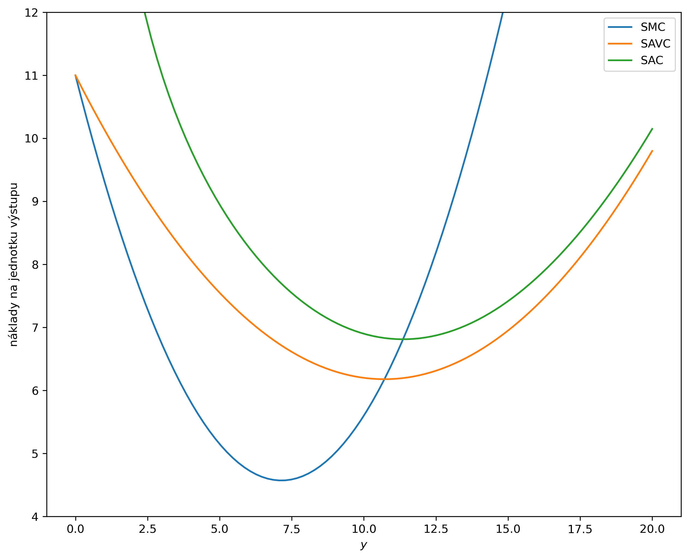
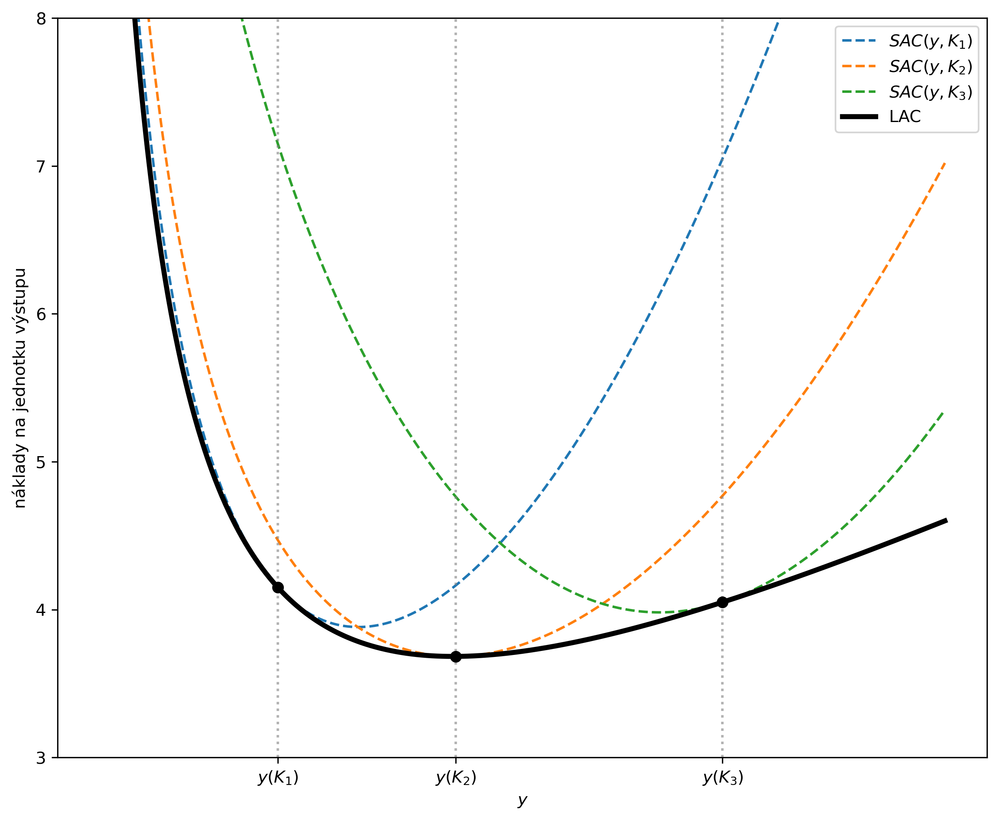
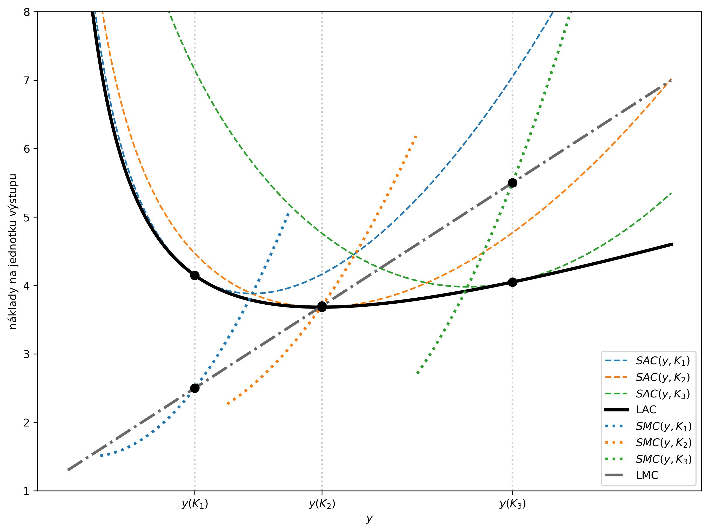
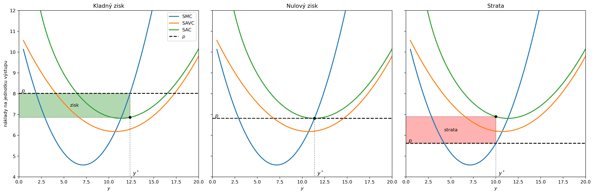
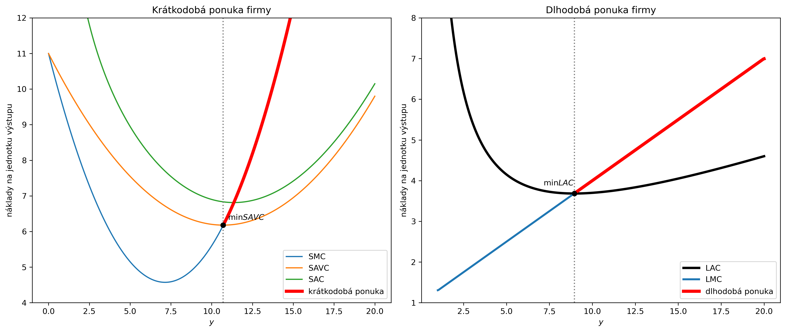
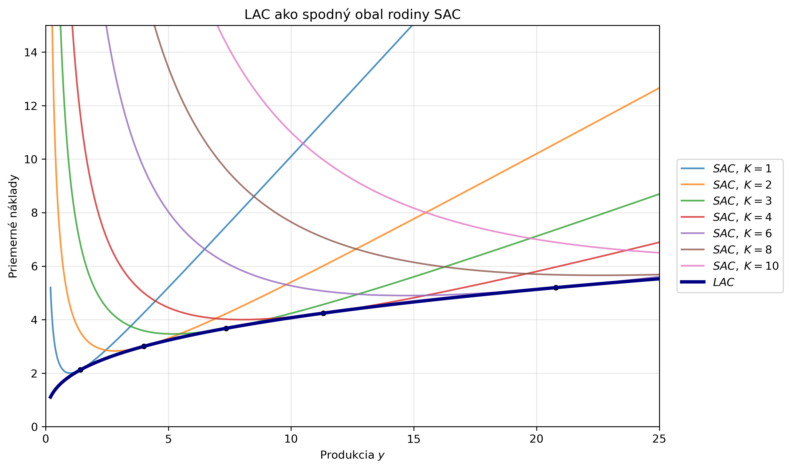

4. Náklady firmy#
Krátkodobé a dlhodobé hľadisko firmy:
z dlhodobého hľadiska sú všetky vstupy variabilné,
z krátkodobého existujú fixné vstupy.
- Variabilné vstupy
Výrobné faktory, ktorých objem môže firma meniť aj v krátkom období.
- Fixné vstupy
Výrobné faktory, ktorých objem je v krátkom období daný a firma ho nemôže meniť (výrobné haly, stroje a pod.)
Aby sme zjednodušili analýzu, predpokladajme, že firma využíva iba dva vstupy. Kapitál \(K\) je fixný vstup a práca \(N\) je variabilný vstup,
Ceny vstupov sú cena jednotky kapitálu a mzdová sadzba
4.1. Krátkodobé náklady#
Celkové náklady firmy sú súčtom nákladov na spotrebu fixného a variabilného vstupu:
kde \(q\) je cena jednotky kapitálu a \(\omega\) mzdová sadzba.
Do nákladovej funkcie možno za vstupy dosadiť podmienené dopytové funkcie (3.11) a získať nákladovú funkciu (3.12).
Z krátkodobého hľadiska je variabilný iba vstup \(N\), ktorého dopyt je \(N(y,q,\omega)\).
Vstup \(K\) je fixný, preto nezávisí od objemu výroby ani od cien vstupov.
Krátkodobá nákladová funkcia je v tvare
Prvý člen \(qK\) predstavuje fixné náklady.
Definujme funkcie krátkodobých variabilných nákladov, krátkodobých priemerných nákladov, krátkodobých priemerných variabilných nákladov a krátkodobých hraničných nákladov.
- Krátkodobé variabilné náklady
Krátkodobé náklady po odpočítaní fixných nákladov,
- Krátkodobé priemerné náklady
Podiel krátkodobých nákladov na objeme výroby,
- Krátkodobé priemerné variabilné náklady
Podiel krátkodobých variabilných nákladov na objeme výroby,
- Krátkodobé hraničné náklady
Výstupný Multiplikátor krátkodobých nákladov,
4.2. Dlhodobé náklady#
Z dlhodobého hľadiska sú všetky vstupy variabilné. Firma preto hľadá optimálny objem spotreby nielen variabilných, ale aj krátkodobo fixných vstupov.
Popri spotrebe práce plánuje aj optimálnu veľkosť výrobných hál, strojového vybavenia a ďalších výrobných kapacít.
Dlhodobá nákladová funkcia má tvar
Definujme funkcie dlhodobých priemerných nákladov a dlhodobých hraničných nákladov.
- Dlhodobé priemerné náklady
podiel dlhodobej nákladovej funkcie na výstupe,
- Dlhodobé hraničné náklady
výstupný multiplikátor dlhodobých nákladov,
4.3. Vlastnosti krátkodobých nákladov#
Na Obr. 4.1 sú zobrazené priebehy definovaných krátkodobých funkcií.

Obr. 4.1 Vlastnosti krátkodobých nákladov#
Z grafu vyplývajú nasledujúce vlastnosti.
Krátkodobé priemerné náklady klesajú, ak \(SMC<SAC\), rastú, ak \(SMC>SAC\), a v bode minima platí
To isté platí pre krátkodobé priemerné variabilné náklady. Ak \(SMC<SAVC\), potom \(SAVC\) klesajú. Ak \(SMC>SAVC\), potom \(SAVC\) rastú. V bode minima platí
Pri veľmi malom objeme výroby sú krátkodobé hraničné náklady približne rovnaké ako krátkodobé priemerné variabilné náklady.
S rastom výstupu sa krátkodobé priemerné náklady a krátkodobé priemerné variabilné náklady približujú. Príspevok fixných nákladov na jednotku výstupu sa postupne znižuje.
Pri nízkom objeme výroby dosahujú krátkodobé priemerné náklady vysoké hodnoty.
Tieto vlastnosti možno preukázať.
4.3.1. Vzťah medzi hraničnými a priemernými nákladmi#
Podľa prvej vlastnosti priebeh krátkodobých priemerných nákladov \(SAC\) závisí od ich porovnania s krátkodobými hraničnými nákladmi \(SMC\).
Priebeh krátkodobých priemerných nákladov možno vyjadriť prvou deriváciou:
Ak je táto derivácia kladná, krátkodobé priemerné náklady rastú, ak je záporná, krátkodobé priemerné náklady klesajú. V bode minima sa rovná nule.
Po rozpísaní priemerných nákladov a použití pravidla pre deriváciu podielu platí
Po dosadení
dostaneme
Keďže
platí
Preto
Znamienko prvej derivácie priemerných nákladov závisí od znamienka čitateľa zlomku na pravej strane \(SMC - SAC\).
Výsledok možno zhrnúť do nasledujúcej tabuľky.
Vzťah medzi \(SMC\) a \(SAC\) |
Priebeh \(SAC\) |
|---|---|
\(SMC < SAC\) |
\(SAC\) klesajú |
\(SMC = SAC\) |
\(SAC\) dosahujú minimum |
\(SMC > SAC\) |
\(SAC\) rastú |
4.3.2. Vzťah medzi hraničnými a priemernými variabilnými nákladmi#
Podľa druhej vlastnosti priebeh krátkodobých priemerných variabilných nákladov \(SAVC\) závisí od ich porovnania s krátkodobými hraničnými nákladmi \(SMC\).
Priebeh krátkodobých priemerných variabilných nákladov možno vyjadriť prvou deriváciou:
Ak je táto derivácia kladná, krátkodobé priemerné variabilné náklady rastú, ak je záporná, krátkodobé priemerné variabilné náklady klesajú. V bode minima sa rovná nule.
Po rozpísaní priemerných variabilných nákladov a použití pravidla pre deriváciu podielu platí
Keďže fixné náklady nezávisia od objemu výroby,
platí
Po dosadení dostaneme
Keďže
platí
Preto
Znamienko prvej derivácie priemerných variabilných nákladov závisí od znamienka čitateľa zlomku na pravej strane \(SMC-SAVC\).
Výsledok možno zhrnúť do nasledujúcej tabuľky.
Vzťah medzi \(SMC\) a \(SAVC\) |
Priebeh \(SAVC\) |
|---|---|
\(SMC < SAVC\) |
\(SAVC\) klesajú |
\(SMC = SAVC\) |
\(SAVC\) dosahujú minimum |
\(SMC > SAVC\) |
\(SAVC\) rastú |
Pri tretej vlastnosti využijeme L’Hôpitalovo pravidlo. Ak
potom platí
Skúmajme správanie krátkodobých priemerných variabilných nákladov pri veľmi nízkom výstupe:
Použitím L’Hôpitalovho pravidla získame
Keďže
platí
Pri veľmi nízkom objeme výroby sú preto krátkodobé priemerné variabilné náklady a krátkodobé hraničné náklady takmer rovnaké.
4.3.3. Priemerné náklady#
S rastom výstupu \(y\) sa krátkodobé priemerné náklady a krátkodobé priemerné variabilné náklady k sebe približujú.
Platí totiž
Preto
Použitím pravidiel pre limity dostaneme
Keďže fixné náklady \(qK\) sú konštantné,
Preto
Pri vysokom objeme výroby je príspevok fixných nákladov na jednotku produkcie zanedbateľný a krátkodobé priemerné náklady sa približujú ku krátkodobým priemerným variabilným nákladom.
Podľa poslednej vlastnosti, pri veľmi nízkom objeme výroby sú krátkodobé priemerné náklady veľmi vysoké.
Platí
Pri limite pre \(y\rightarrow 0\) dostaneme
Keďže fixné náklady \(qK\) sú kladná konštanta,
Preto
Pri veľmi nízkom objeme výroby sa fixné náklady rozpočítavajú na malý počet jednotiek produkcie, čo spôsobuje prudký rast krátkodobých priemerných nákladov.
4.3.4. Vzťah medzi produkčnou funkciou a krátkodobými nákladmi#
Krátkodobé variabilné náklady (4.2) možno zapísať aj v tvare vyjadrujúcom približné zvýšenie variabilných nákladov spôsobené zvýšením množstva práce:
Hraničný produkt práce (2.24) vyjadruje približné zvýšenie výstupu spôsobené jednotkovým zvýšením množstva práce.
Obrátená hodnota hraničného produktu práce preto vyjadruje približné množstvo práce potrebné na výrobu dodatočnej jednotky produkcie:
Dosadením do predchádzajúceho vzťahu dostaneme
Keďže prvá derivácia krátkodobých variabilných nákladov podľa produkcie sa rovná krátkodobým hraničným nákladom, platí
Vzťah ukazuje, že hraničné náklady závisia od ceny práce a jej hraničného produktu. Čím vyšší je hraničný produkt práce, tým menšie množstvo práce je potrebné na výrobu dodatočnej jednotky produkcie a tým nižšie sú hraničné náklady.
Ak sa pri raste produkcie hraničný produkt práce znižuje, na výrobu dodatočnej jednotky produkcie je potrebné stále väčšie množstvo práce. Rast krátkodobých hraničných nákladov je preto dôsledkom zákona klesajúcich hraničných výnosov práce.
Hraničný produkt práce \(MPN\) |
Krátkodobé hraničné náklady \(SMC\) |
Krátkodobé celkové náklady \(SC\) |
|---|---|---|
\(MPN\) rastie |
\(SMC\) klesajú |
\(SC\) sú konkávne |
\(MPN\) dosahuje maximum |
\(SMC\) dosahujú minimum |
\(SC\) majú inflexný bod |
\(MPN\) klesá |
\(SMC\) rastú |
\(SC\) sú konvexné |
4.4. Vlastnosti dlhodobých nákladov#
Analogicky ako pri krátkodobých nákladoch platia nasledovné vlastnosti.
Dlhodobé priemerné náklady klesajú, ak \(LMC<LAC\), rastú, ak \(LMC>LAC\), a v bode minima platí
Pri veľmi nízkom objeme výroby sú dlhodobé hraničné náklady približne rovnaké ako dlhodobé priemerné náklady.
4.4.1. Vzťah medzi hraničnými a priemernými nákladmi#
Dlhodobé priemerné náklady sú
Ich prvá derivácia je
Po použití pravidla pre deriváciu podielu dostaneme
Keďže
platí
Preto:
Vzťah medzi \(LMC\) a \(LAC\) |
Priebeh \(LAC\) |
|---|---|
\(LMC < LAC\) |
\(LAC\) klesajú |
\(LMC = LAC\) |
\(LAC\) dosahujú minimum |
\(LMC > LAC\) |
\(LAC\) rastú |
4.4.2. Správanie pri nízkom objeme výroby#
Keďže
a pri nulovom výstupe platí
môžeme použiť L’Hôpitalovo pravidlo:
Pri veľmi nízkom objeme výroby sú preto dlhodobé priemerné a dlhodobé hraničné náklady približne rovnaké.
4.4.3. Vzťah medzi produkčnou funkciou a dlhodobými nákladmi#
Vzťah medzi produkčnou a nákladovou funkciou možno zhrnúť nasledovne:
Produkčná funkcia |
Nákladová funkcia |
|---|---|
Zákon klesajúcich hraničných výnosov práce |
Rastúce krátkodobé hraničné náklady |
Rastúci \(MP_N\) |
Klesajúce \(SMC\) |
Maximálny \(MP_N\) |
Minimálne \(SMC\) |
Klesajúci \(MP_N\) |
Rastúce \(SMC\) |
Rastúce výnosy z rozsahu |
Klesajúce \(LAC\) |
Konštantné výnosy z rozsahu |
Približne konštantné \(LAC\) |
Klesajúce výnosy z rozsahu |
Rastúce \(LAC\) |
Krátkodobé náklady sú ovplyvnené hraničnými výnosmi variabilných vstupov. Dlhodobé náklady sú ovplyvnené výnosmi z rozsahu produkčnej funkcie.
V krátkom období firma mení iba časť výrobných faktorov. Rast hraničných nákladov je preto dôsledkom zákona klesajúcich hraničných výnosov variabilného vstupu. V dlhom období môže firma prispôsobovať všetky vstupy. Tvar dlhodobých priemerných nákladov je preto určený výnosmi z rozsahu produkčnej funkcie. Pozri tiež Príklad: Vzťah medzi produkčnou funkciou a nákladmi.
4.5. Vzťah medzi krátkodobými a dlhodobými nákladmi#
Krátkodobé náklady závisia od objemu fixných vstupov. Každá hodnota fixného vstupu preto určuje inú krátkodobú nákladovú funkciu.
Z dlhodobého hľadiska môže firma meniť všetky vstupy vrátane tých, ktoré sú v krátkom období fixné. Pre každý objem výroby si preto vyberie takú kombináciu vstupov, ktorá minimalizuje náklady.
Dlhodobá nákladová funkcia preto predstavuje najnižšie náklady, ktoré možno pri danom objeme výroby dosiahnuť.

Obr. 4.2 Vzťah medzi krátkodobými a dlhodobými priemernými nákladmi#

Obr. 4.3 Vzťah medzi krátkodobými a dlhodobými nákladmi#
Grafická interpretácia vzťahov medzi dlhodobými a krátkodobými nákladmi je na Vzťah medzi krátkodobými a dlhodobými priemernými nákladmi a Vzťah medzi krátkodobými a dlhodobými nákladmi.
Dlhodobá krivka priemerných nákladov je dolným obalom krátkodobých kriviek priemerných nákladov. V bodoch dotyku platí
V rovnakých bodoch sa zároveň rovnajú aj dlhodobé a krátkodobé hraničné náklady:
Bod \(y(K_1)\) leží v oblasti rastúcich výnosov z rozsahu. Pri zvýšení objemu fixného vstupu môže firma v dlhom období znížiť priemerné náklady.
Bod \(y(K_2)\) zodpovedá minimu krivky dlhodobých priemerných nákladov. Firma disponuje optimálnym objemom fixného vstupu.
Bod \(y(K_3)\) leží v oblasti klesajúcich výnosov z rozsahu. Pri znížení objemu fixného vstupu môže firma v dlhom období znížiť priemerné náklady.
Z grafu vyplývajú nasledovné vlastnosti.
Dlhodobé priemerné náklady nikdy nie sú vyššie ako krátkodobé priemerné náklady
Dlhodobá krivka priemerných nákladov je dolným obalom krátkodobých kriviek priemerných nákladov.
Pre každý objem výroby existuje krátkodobá krivka priemerných nákladov, ktorá sa dotýka dlhodobej krivky priemerných nákladov.
V bode dotyku platí
V bode dotyku majú krátkodobé a dlhodobé hraničné náklady rovnakú hodnotu,
Dlhodobé náklady vznikajú minimalizáciou krátkodobých nákladov podľa objemu fixných vstupov:
Preto pre ľubovoľný objem fixného vstupu platí
Po vydelení objemom výroby dostaneme
Dlhodobá krivka priemerných nákladov preto leží pod všetkými krátkodobými krivkami priemerných nákladov a tvorí ich dolný obal.
Pre každý objem výroby existuje optimálny objem fixného vstupu \(K^*(y)\), pre ktorý platí
Preto
V každom bode dlhodobej krivky sa teda nachádza krátkodobá krivka, ktorá sa jej dotýka.
Dlhodobá krivka priemerných nákladov je preto dolným obalom krátkodobých kriviek priemerných nákladov.
V bode dotyku krátkodobej a dlhodobej nákladovej funkcie sa krátkodobé a dlhodobé hraničné náklady rovnajú.
Dôkaz vyplýva z derivácie rovnosti
podľa objemu výroby a zo skutočnosti, že optimálny objem fixného vstupu \(K^*(y)\) minimalizuje krátkodobé náklady.
Platí
4.6. Ponuka firmy#
Ponuková funkcia firmy vyplýva z úlohy maximalizácie zisku výberom výstupu. Podmienka prvého rádu úlohy je (3.13).
4.6.1. Krátkodobá ponuková funkcia#
Dosadením funkcie krátkodobých hraničných nákladov (4.5) do podmienky prvého rádu (3.13) získame
V podmienkach dokonalej konkurencie považuje firma cenu výstupu \(p\) za danú. O objeme výroby rozhoduje porovnaním ceny s nákladmi na jednotku výstupu.
Ak platí
firma dosahuje kladný ekonomický zisk. Tržba z jednej jednotky výstupu prevyšuje priemerné náklady na jej výrobu.
Ak platí
firma dosahuje nulový ekonomický zisk. Tržby presne pokrývajú všetky ekonomické náklady vrátane implicitných nákladov vlastných výrobných faktorov.
Ak platí
firma dosahuje stratu. Napriek tomu pokračuje vo výrobe, pretože tržby pokrývajú všetky variabilné náklady a zároveň aspoň časť fixných nákladov. Strata pri pokračovaní vo výrobe je preto menšia ako strata pri zastavení výroby.
Ak platí
firma výrobu zastaví. Tržby už nestačia ani na pokrytie variabilných nákladov. Pokračovanie vo výrobe by znamenalo, že firma musí uhrádzať nielen fixné náklady, ale aj časť variabilných nákladov z vlastných zdrojov. Výhodnejšie je preto výrobu zastaviť a znášať iba fixné náklady.
Geometrická interpretácia zisku firmy je na Obr. 4.4. Zisk z jednotky výroby je \(p - SAC(y^*)\). Vynásobením realizovaným objemom výroby získame zisk \( [ p - SAC(y^* ) ] y^*\). Možno sa o tom presvedčiť aj zo ziskovej funkcie

Obr. 4.4 Grafická interpretácia zisku#
Krátkodobú ponukovú funkciu tvorí rastúca časť krivky krátkodobých hraničných nákladov nad minimom krivky priemerných variabilných nákladov.
Firma vyrába iba vtedy, ak cena pokrýva priemerné variabilné náklady. Krátkodobú ponukovú funkciu preto tvorí rastúca časť krivky krátkodobých hraničných nákladov nad minimom krivky priemerných variabilných nákladov.
4.6.2. Dlhodobá ponuková funkcia#
Dosadením funkcie dlhodobých hraničných nákladov (4.7) do podmienky prvého rádu (3.13) získame
Keďže v dlhom období firma optimálne prispôsobuje aj množstvo kapitálu, dlhodobé hraničné náklady závisia iba od výstupu a cien výrobných faktorov. Preto platí
Optimálny výstup firmy je určený priesečníkom ceny a krivky dlhodobých hraničných nákladov. Firma však vyrába iba vtedy, ak cena pokrýva minimálne dlhodobé priemerné náklady. Dlhodobú ponukovú funkciu preto tvorí rastúca časť krivky dlhodobých hraničných nákladov ležiaca nad minimom krivky dlhodobých priemerných nákladov (4.6).

Obr. 4.5 Krátkodobá a dlhodobá ponuka firmy#
Na Obr. 4.5 sú porovnané krátkodobá a dlhodobá ponuková funkcia firmy.
Dlhodobá ponuková funkcia je spravidla plochejšia ako krátkodobá ponuková funkcia. V dlhom období môže firma prispôsobovať všetky výrobné faktory vrátane kapitálu. Rast produkcie preto vedie k menšiemu rastu hraničných nákladov než v krátkom období.
Táto vlastnosť sa odráža aj vo vzťahu medzi krátkodobými a dlhodobými nákladmi. Krivka dlhodobých priemerných nákladov (4.6) tvorí spodný obal krátkodobých priemerných nákladov (4.3), pretože pre každý objem výroby môže firma zvoliť takú úroveň kapitálu, ktorá minimalizuje náklady. Analogicky sú dlhodobé hraničné náklady (4.7) plochejšie než krátkodobé hraničné náklady (4.5).
Ide o prejav Le Chatelierovho princípu, podľa ktorého sa reakcia ekonomických subjektov na zmenu podmienok zväčšuje s dĺžkou obdobia, počas ktorého sa môžu prispôsobovať.
4.6.3. Dlhodobá rovnováha firmy#
V dokonalej konkurencii je na trhu veľké množstvo firiem. Platí, že ak
V dlhodobom konkurenčnom rovnovážnom stave platí
Firma preto vyrába pri objeme výstupu, pri ktorom dosahujú dlhodobé priemerné náklady svoje minimum a ekonomický zisk je nulový.
4.7. Agregácia#
V aplikovanej ekonómii pochádzajú údaje často z pozorovaní agregovaných premenných, ako je celkový výstup odvetvia, dopyt odvetvia po určitom výrobnom faktore alebo celkový zisk v sektore. Doteraz sme diskutovali len o produkcii, vstupe a zisku jednej firmy. Je potrebné rozšíriť tieto diskusie aj o agregované premenné. Klasickým prístupom k tomuto problému je predpokladať, že agregované premenné sú generované jedinou firmou — fiktívnou firmou. Ak je to tak, všetky doterajšie, sú okamžite aplikovateľné aj na agregované premenné. Konkrétne, ak máme \(n\) nezávislých firiem, môžeme agregované ich ponukové a ziskové funkcie považovať za ponukovú a ziskovú funkciu jednej firmy? Odpoveď je áno za určitých podmienok. Predpokladajme, že v ekonomike je \(m\) firiem alebo závodov. Každá firma \(i\) ponúka výstup podľa ponukovej funkcie \(s_i(p)\) pre všetky \( i = \{1,2, \cdots m \}\). Agregovaná ponuková funkcia je
4.8. Riešené príklady#
Využité knižnice sú
from sympy import solve, symbols, simplify, diff
4.8.1. Príklad: Krátkodobé náklady#
Krátkodobá nákladová funkcia firmy má tvar:
Odvoďte funkcie hraničných, priemerných a priemerných variabilných nákladov.
Analyzujte priebeh hraničných, priemerných a priemerných variabilných nákladov. Preukážte, že hraničné náklady pretínajú krivky priemerných a priemerných variabilných nákladov v bodoch ich minima.
Vypočítajte najmenšiu cenu, pri ktorej firma dosahuje kladný ekonomický zisk.
Vypočítajte cenu, pri ktorej firma realizuje ekonomický zisk vo výške 200.
Nájdite interval cien, pri ktorých firma:
realizuje stratu, ale pokračuje vo výrobe,
dosahuje nulový ekonomický zisk,
realizuje kladný ekonomický zisk,
zastaví výrobu.
Odvoďte krátkodobú ponukovú funkciu firmy.
4.8.1.1. Riešenie#
Analytické tvary funkcií krátkodobých nákladov
Hraničné náklady získame derivovaním krátkodobej nákladovej funkcie podľa výstupu:
Priemerné náklady sú podiel celkových nákladov a výstupu:
teda
Fixné náklady sú
Variabilné náklady preto majú tvar
Priemerné variabilné náklady sú
Hľadané nákladové funkcie sú teda
Priebehy funkcií
Hraničné náklady
Derivácia hraničných nákladov je
Platí
Druhá derivácia
je kladná, preto funkcia dosahuje minimum v bode
Hodnota minima je
Krivka hraničných nákladov teda najprv klesá a od bodu \(y=2\) rastie.
Priemerné variabilné náklady
Derivácia priemerných variabilných nákladov je
Podmienka minima:
Keďže
funkcia je konvexná dosahuje minimum v bode
Minimálna hodnota je
Priemerné náklady
Derivácia priemerných nákladov je
Podmienka minima:
Po vynásobení výrazom \(3y^2\) získame
resp.
Numerickým riešením získame
Druhá derivácia priemerných nákladov je
Pre všetky \(y>0\) platí
Funkcia \(SAC\) je preto konvexná a bod
je bodom globálneho minima.
Presné výpočty získame s využitím Pythona neskôr.
Priesečník SMC a SAVC
Vypočítajme priesečník oboch funkcií:
Po dosadení:
Úpravou dostaneme
Netriviálne riešenie je
Práve v tomto bode dosahuje funkcia \(SAVC\) minimum. Preto
Hraničné náklady teda pretínajú krivku priemerných variabilných nákladov presne v jej minime.
Priesečník SMC a SAC
Podobne riešime rovnicu
Po dosadení:
Po úprave:
Po vynásobení výrazom \(3y\):
Ide o tú istú rovnicu, ktorú sme získali pri hľadaní minima funkcie \(SAC\). Preto
a súčasne
Hraničné náklady teda pretínajú aj krivku priemerných nákladov presne v bode jej minima.
Krivka \(SMC\) je konvexná a dosahuje minimum v bode \(y=2\).
Krivka \(SAVC\) je konvexná a dosahuje minimum v bode \(y=3\).
Krivka \(SAC\) je konvexná a dosahuje minimum v bode \(y\approx3,49\).
Krivka \((SMC\) pretína krivku \(SAVC\) v bode minima \(SAVC\).
Krivka \((SMC\) pretína krivku \(SAC\) v bode minima \(SAC\).
Tým je preukázané všeobecné pravidlo, že hraničné náklady pretínajú krivky priemerných a priemerných variabilných nákladov v bodoch ich minima.
Najmenšia cena, pri ktorej ziska dosahuje zisk zodpovedá minimu priemerných nákladov, \(SAC(3,49) \approx 28,23\).
Cena, pri ktorej firma dosahuje zisk 200
Ekonomický zisk firmy je rozdiel medzi celkovými príjmami a celkovými nákladmi: $\( \pi = py-SC(y). \)\( Dosadením nákladovej funkcie dostaneme \)$ \pi = py
\left( \frac13 y^3 -2y^2 +30y +4 \right). $$
Podmienka prvého rádu firmy maximalizujúcej zisk je
Keďže
môžeme cenu vyjadriť ako
Po dosadení do ziskovej funkcie získame maximálny zisk ako funkciu výstupu:
Po úprave
Hľadáme taký výstup, pri ktorom je ekonomický zisk rovný 200:
Po prenásobení tromi dostaneme
resp.
Numerickým riešením získame
Z podmienky maximalizácie zisku následne vypočítame cenu:
Firma teda realizuje ekonomický zisk vo výške 200 pri cene
Správanie firmy podľa ceny
Z predchádzajúcich výpočtov vieme, že
a
Firma pokračuje vo výrobe iba vtedy, ak cena pokryje minimálne priemerné variabilné náklady.
Cena, pri ktorej firma zastaví výrobu
Minimum funkcie \(SAVC\) je v bode
Minimálna hodnota je
Preto
Ak je
firma zastaví výrobu.
Ak je
firma pokračuje vo výrobe.
Cena nulového ekonomického zisku
Minimum funkcie \(SAC\) je v bode
Príslušná hodnota priemerných nákladov je
Preto cena nulového ekonomického zisku je
Pri tejto cene platí
a firma dosahuje nulový ekonomický zisk.
Intervaly cien
Strata, ale pokračovanie vo výrobe
Firma vyrába, ale realizuje stratu, ak cena pokrýva variabilné náklady, avšak nepokrýva celkové náklady:
Nulový ekonomický zisk
Kladný ekonomický zisk
Ak cena prevýši minimálne priemerné náklady,
firma realizuje kladný ekonomický zisk.
Zastavenie výroby
Ak cena nepokrýva ani priemerné variabilné náklady,
firma zastaví výrobu.
Krátkodobá ponuková funkcia
Krátkodobá ponuková funkcia firmy je totožná s rastúcou časťou krivky krátkodobých hraničných nákladov nad minimom priemerných variabilných nákladov.
Z predchádzajúcich výpočtov vieme, že
a minimum funkcie \(SAVC\) nastáva v bode
pričom
Firma preto vyrába iba vtedy, ak
Krivka krátkodobej ponuky má implicitný tvar
Pre explicitné vyjadrenie ponuky riešime rovnicu
Odvodením \(y\) máme
Keďže na ponukovej časti krivky platí
berieme kladný koreň, takže
Krátkodobá ponuková funkcia firmy má teda tvar
y = symbols('y',positive = True)
SC = 1/3*y**3 - 2*y**2 + 30*y + 4
SMC = simplify(diff(SC,y))
SAC = simplify(SC/y)
SAVC = simplify((SC-4)/y)
print('Hraničné náklady', SMC)
print('Priemerné náklady', SAC)
print('Priemerné variabilné náklady', SAVC)
Hraničné náklady 1.0*y**2 - 4*y + 30
Priemerné náklady 0.333333333333333*y**2 - 2*y + 30 + 4/y
Priemerné variabilné náklady 0.333333333333333*y**2 - 2*y + 30
print ("SMC'", simplify(diff(SMC,y)))
print ("SMC''", simplify(diff(SMC,y,2)))
SMC' 2.0*y - 4
SMC'' 2.00000000000000
Keďže druhá derivácia je kladná, funkcia je konvexná. Jej minimum:
min_SMC_y = solve(diff(SMC,y),dict=True)
min_SMC_y = min_SMC_y[0] if type(min_SMC_y) is list else min_SMC_y
min_SMC = SMC.subs(min_SMC_y)
print("Minimum SMC: [",min_SMC_y[y],",",min_SMC,"]" )
Minimum SMC: [ 2.00000000000000 , 26.0000000000000 ]
print ("SAVC'", simplify(diff(SAVC,y)))
print ("SAVC''", simplify(diff(SAVC,y,2)))
SAVC' 0.666666666666667*y - 2
SAVC'' 0.666666666666667
Keďže druhá derivácia je kladná, funkcia je konvexná. Jej minimum:
min_SAVC_y = solve(diff(SAVC,y),dict=True)
min_SAVC_y = min_SAVC_y[0] if type(min_SAVC_y) is list else min_SAVC_y
min_SAVC = SAVC.subs(min_SAVC_y)
print("Minimum SAVC: [",min_SAVC_y[y],",",min_SAVC,"]" )
Minimum SAVC: [ 3.00000000000000 , 27.0000000000000 ]
print ("SAC'", simplify(diff(SAC,y)))
print ("SAC''", simplify(diff(SAC,y,2)))
SAC' 0.666666666666667*y - 2 - 4/y**2
SAC'' 0.666666666666667 + 8/y**3
Keďže druhá derivácia je kladná, ak \(y>0\), funkcia je konvexná. Jej minimum:
min_SAC_y = solve(diff(SAC,y),dict=True)
min_SAC_y = min_SAC_y[0] if type(min_SAC_y) is list else min_SAC_y
min_SAC = SAC.subs(min_SAC_y)
print("Minimum SAC: [",min_SAC_y[y],",",min_SAC,"]" )
Minimum SAC: [ 3.49203330117182 , 28.2261633718057 ]
Funkčné hodnoty \(SMC\) v bodoch minima \(SAVC\) a \(SAC\).
print(SMC.subs(min_SAVC_y))
print(SMC.subs(min_SAC_y))
27.0000000000000
28.2261633718057
Sú rovnaké ako funkčné hodnoty \(SAVC\) a \(SAC\) v týchto bodoch, takže \(SMC\) prechádza bodmi minima \(SAVC\) a \(SAC\).
Zisková funkcia je
Podmienka prvého rádu je firmy maximalizujúcej zisk výberom výstupu je
Ak dosadíme podmienku prvého rádu do ziskovej funkcie získame funkciu zisku v tvare:
zisk = SMC * y - SC
simplify(zisk)
Zisk sa má rovnať \(200\), preto riešime rovnicu:
zisk200_y = solve(zisk-200,y,dict=True)
zisk200_y = zisk200_y[0] if type(zisk200_y) is list else zisk200_y
zisk200_p = SMC.subs(zisk200_y)
print("Firma dosiahne zisk 200 pri cene")
print(zisk200_y[y])
print("Zodpovedajúci objem výroby je")
print(zisk200_p)
Firma dosiahne zisk 200 pri cene
7.90136566824661
Zodpovedajúci objem vúroby je
60.8261167503597
Krátkodoba ponuka firmy zodpovedá funkcie krátkodobých hraničných nákladov pre \(y \ge 3\) a \(p\ge27\). Riešime rovnicu
p = symbols('p')
ponuka = solve (p-SMC,y,dict=True)
ponuka
[{y: 2.0 - sqrt(p - 26.0)}, {y: sqrt(p - 26.0) + 2.0}]
Keďže podmienke \(y \ge 3\) vyhovuje druhé z dvoch riešení, platí:
print("Ponuka firmy je", ponuka[1])
Ponuka firmy je {y: sqrt(p - 26.0) + 2.0}
4.8.2. Príklad: Vzťah medzi krátkodobými a dlhodobými nákladmi#
Kapitál firmy \(K\) je krátkodobo fuxný vstup a dlhodobp variabilný. Krátkodobá nákladová funkcia firmy má tvar
Odvoďte funkcie krátkodobých priemerných a hraničných nákladov.
Pri danom objeme výroby nájdite takú zásobu kapitálu, ktorá minimalizuje celkové náklady firmy.
Odvoďte dlhodobú nákladovú funkciu firmy.
Odvoďte funkcie dlhodobých priemerných a hraničných nákladov.
Preukážte, že krivka dlhodobých priemerných nákladov tvorí spodný obal rodiny krátkodobých priemerných nákladov.
Formulujte krátkodobú a dlhodobú ponukovú funkciu firmy.
Porovnajte krátkodobú a dlhodobú ponukovú funkciu a vysvetlite, prečo je dlhodobá ponuka firmy plochejšia ako krátkodobá.
4.8.2.1. Riešenie#
Krátkodobá nákladová funkcia firmy je
V krátkom období je kapitál \(K\) fixný.
Krátkodobé priemerné náklady
Krátkodobé priemerné náklady získame vydelením celkových nákladov objemom výroby:
Po dosadení:
Krátkodobé hraničné náklady
Krátkodobé hraničné náklady sú deriváciou krátkodobej nákladovej funkcie podľa výstupu:
Prvou deriváciou získame
V dlhom období môže firma meniť aj zásobu kapitálu. Pri danom objeme výroby preto hľadá takú hodnotu kapitálu \(K\), ktorá minimalizuje celkové náklady
Úlohu minimalizácie môžeme zapísať v tvare
Podmienka prvého rádu
Derivujeme nákladovú funkciu podľa kapitálu:
Podmienka minima je
Po vynásobení výrazom \(K^2\) získame
teda
Po vyjadrení kapitálu:
Podmienka druhého rádu
Druhá derivácia nákladovej funkcie podľa kapitálu je
Keďže pre všetky prípustné hodnoty \(y\) a \(K\) platí
nákladová funkcia je vzhľadom na kapitál konvexná a nájdený bod predstavuje minimum.
Záver
Zásoba kapitálu, ktorá pri danom objeme výroby minimalizuje celkové náklady firmy, je
Optimálna zásoba kapitálu teda rastie s objemom výroby. Pri vyššej produkcii je pre firmu výhodné využívať viac kapitálu, aby dosiahla nižšie náklady.
Dlhodobú nákladovú funkciu získame dosadením optimálnej zásoby kapitálu
do krátkodobej nákladovej funkcie
Dostávame
Jednotlivé členy upravíme:
a
Preto
Po vyňatí spoločného člena dostaneme
Keďže
platí
Dlhodobá nákladová funkcia má teda tvar
Dlhodobé priemerné náklady
Dlhodobé priemerné náklady získame vydelením celkových nákladov objemom výroby:
Po dosadení:
Dlhodobé hraničné náklady
Dlhodobé hraničné náklady sú deriváciou dlhodobej nákladovej funkcie podľa výstupu:
Po derivovaní dostaneme
Po úprave:
Záver
Dlhodobé priemerné náklady majú tvar
a dlhodobé hraničné náklady
Krivka dlhodobých priemerných nákladov tvorí spodný obal rodiny krátkodobých priemerných nákladov.
Krátkodobé priemerné náklady majú tvar
Pre každú pevnú hodnotu kapitálu \(K\) dostaneme jednu krivku krátkodobých priemerných nákladov.
V predchádzajúcej úlohe sme ukázali, že náklady sú minimálne pri zásobe kapitálu
Dosadením optimálneho kapitálu do funkcie \(SAC\) získame
Po úprave
To je presne funkcia dlhodobých priemerných nákladov
Platí teda
Keďže firma pre každý objem výroby vyberá takú zásobu kapitálu, ktorá minimalizuje náklady, platí pre ľubovoľné \(K\)
Rovnosť nastáva iba pri optimálnej zásobe kapitálu
Krivka \(LAC\) sa preto v každom bode dotýka jednej z kriviek \(SAC\) a súčasne leží pod všetkými ostatnými krivkami \(SAC\).
Preto krivka dlhodobých priemerných nákladov tvorí spodný obal rodiny krátkodobých priemerných nákladov.
Krátkodobá ponuková funkcia
Krátkodobé hraničné náklady majú tvar
V krátkom období je kapitál fixný, preto optimálny objem výroby určuje podmienka
Po dosadení dostaneme
Po vyjadrení výstupu:
Krátkodobá ponuková funkcia firmy je teda
Keďže
v tomto modeli neexistujú fixné náklady nezávislé od objemu výroby a platí
Minimum priemerných nákladov nastáva v bode
pričom
Firma preto vyrába iba vtedy, ak
Krátkodobú ponukovú funkciu možno zapísať v tvare
Dlhodobá ponuková funkcia
V dlhom období môže firma meniť aj zásobu kapitálu. Dlhodobé hraničné náklady majú tvar
Optimálny výstup určuje podmienka
Po dosadení:
Vyjadríme výstup:
Po úprave dostaneme
Keďže
je rastúca funkcia, neexistuje konečná cena, pri ktorej by firma dosahovala nulový ekonomický zisk. Minimum funkcie \(LAC\) sa nachádza v bode
Dlhodobá ponuková funkcia je preto celá krivka \(LMC\).
Porovnanie
Krátkodobá ponuka firmy je
teda lineárna funkcia ceny.
Dlhodobá ponuka firmy je
pričom firma pri každom objeme výroby optimálne prispôsobuje zásobu kapitálu.
V dlhom období preto reaguje na zmenu ceny výraznejšie než v krátkom období, čo je prejav Le Chatelierovho princípu.
Na Obr. 4.6 sú zobrazené funkcie krátkodobých priemerných nákladov pre rôzne hodnoty kapitálu. Krivka dlhodobých priemerných nákladov tvorí ich spodný obal.

Obr. 4.6 Príklad 2: Dlhdobé a krátkodobé priemerné náklady#
Krivka dlhodobých priemerných nákladov \(LAC\) tvorí dolný obal rodiny krátkodobých priemerných nákladov \(SAC\). Pre každý objem výroby si firma môže zvoliť takú zásobu kapitálu, ktorá minimalizuje priemerné náklady. Krivka \(LAC\) preto v každom bode predstavuje najnižšie dosiahnuteľné priemerné náklady pri danom objeme produkcie.
4.8.2.2. Python#
Krátkodobé nákladové funkcie
# symboly
y, K = symbols("y K", positive=True)
# krátkodobá nákladová funkcia
SC = K**2 + y**2/K
print("SC =", SC)
# krátkodobé priemerné náklady
SAC = simplify(SC/y)
print("SAC =", SAC)
# krátkodobé hraničné náklady
SMC = simplify(diff(SC, y))
print("SMC =", SMC)
SC = K**2 + y**2/K
SAC = K**2/y + y/K
SMC = 2*y/K
Optimálny kapitál pri danom objeme výroby.
# optimálny kapitál
dSC_dK = simplify(diff(SC, K))
print("dSC/dK =", dSC_dK)
K_star = solve(dSC_dK, K,dict=True)
K_star = K_star[0] if type(K_star) is list else K_star
print(K_star)
dSC/dK = 2*K - y**2/K**2
{K: 2**(2/3)*y**(2/3)/2}
Dlhodobá nákladová funkcia.
# dlhodobá nákladová funkcia
C = simplify(SC.subs(K_star))
print("C(y) =", C)
C(y) = 3*2**(1/3)*y**(4/3)/2
# dlhodobé priemerné náklady
LAC = simplify(C/y)
print("LAC =", LAC)
# dlhodobé hraničné náklady
LMC = simplify(diff(C, y))
print("LMC =", LMC)
LAC = 3*2**(1/3)*y**(1/3)/2
LMC = 2*2**(1/3)*y**(1/3)
SAC_star = simplify(SAC.subs(K_star))
print("SAC(K*) =", SAC_star)
print("LAC =", LAC)
print("Rozdiel medzi SAC(K*) a LAC =", simplify(SAC_star - LAC))
SAC(K*) = 3*2**(1/3)*y**(1/3)/2
LAC = 3*2**(1/3)*y**(1/3)/2
Rozdiel medzi SAC(K*) a LAC = 0
Krátkodobá ponuková funkcia
# krátkodobá ponuka
s_SR = solve(p - SMC, y, dict = True)
s_SR = s_SR[0] if type(s_SR) is list else s_SR
print("kratkodoba ponuka =", s_SR)
kratkodoba ponuka = {y: K*p/2}
4.8.3. Príklad: Vzťah medzi produkčnou funkciou a nákladmi#
Uvažujme produkčnú funkciu v Cobbovom-Douglasovom tvare
kde
Predpokladajme ceny vstupov
Preukážte, že za predpokladu klesajúceho hraničného produktu práce v Cobbovom-Douglasovom tvare produkčnej funkcie sú krátkodobé hraničné náklady rastúce a teda krátkodobá nákladová funkcia konvexná.
Odvoďte podmienený dopyt po vstupoch.
Odvoďte dlhodobú nákladovú funkciu.
Odvoďte funkciu dlhodobých priemerných nákladov.
Preukážte, že:
ak \(\alpha+\beta<1\), potom \(LAC\) rastú,
ak \(\alpha+\beta=1\), potom \(LAC\) sú konštantné,
ak \(\alpha+\beta>1\), potom \(LAC\) klesajú.
Interpretujte výsledok z pohľadu výnosov z rozsahu.
4.8.3.1. Riešenie#
Krátkodobé náklady
V krátkom období je kapitál fixný. Krátkodobé hraničné náklady preto môžeme odvodiť zo vzťahu medzi hraničným produktom práce a hraničnými nákladmi (4.8)
Pre Cobbovu-Douglasovu produkčnú funkciu
je hraničný produkt práce
Dosadením do vzťahu (4.8) dostaneme
Keďže chceme vyjadriť hraničné náklady ako funkciu produkcie, vyjadríme prácu z produkčnej funkcie
Po dosadení dostaneme
Po úprave
Keďže pre Cobbovu-Douglasovu produkčnú funkciu platí
dostávame
Hraničné náklady sú preto rastúcou funkciou výstupu. Tento výsledok je dôsledkom klesajúceho hraničného produktu práce pri fixnom kapitáli Tab. 4.3.
Dlhodobé náklady
Podmienené dopytové funkcie
Podľa podmienok prvého rádu úlohy firmy minimalizujúcej náklady vzhľadom na fixný výstup (3.9) a (3.10) platí
Pre Cobbovu-Douglasovu produkčnú funkciu
Po dosadení dostaneme
Po úprave
Odtiaľ
Dosadením do ohraničenia konštantného výstupu
získame
Po vyjadrení kapitálu
Podmienený dopyt po kapitáli je teda
Dosadením do vzťahu
dostaneme
Podmienený dopyt po práci je
Dlhodobá nákladová funkcia
Z predchádzajúcej úlohy sme odvodili podmienené dopyty po vstupoch
Dlhodobá nákladová funkcia je
Po dosadení podmienených dopytových funkcií za vstupy získame Výraz v hranatej zátvorke závisí iba od parametrov produkčnej funkcie a od cien vstupov. Označme ho symbolom \(A\). Potom dlhodobú nákladovú funkciu možno zapísať v tvare
kde
Exponent dlhodobej nákladovej funkcie závisí od súčtu exponentov Cobbovej-Douglasovej produkčnej funkcie
Vzťah medzi výnosmi z rozsahu a nákladovou funkciou budeme analyzovať v nasledujúcich úlohách.
Dlhodobé priemerné náklady získame vydelením celkových nákladov objemom výroby:
Po dosadení $\( LAC(y)= \frac{ A y^{\frac{1}{\alpha+\beta}} }{y}. \)$ Po úprave získame
Dlhodobé hraničné náklady sú prvou deriváciou dlhodobej nákladovej funkcie podľa produkcie:
Po derivovaní dostaneme
Vzťah medzi LMC a LAC Porovnaním oboch funkcií dostávame
Vzájomný vzťah dlhodobých priemerných a hraničných nákladov preto závisí od súčtu exponentov Cobbovej-Douglasovej produkčnej funkcie.
Ak
potom
a podľa Tab. 4.4 priemerné dlhodobé náklady \(LAC\) sú rastúce.
Ak
potom
a podľa Tab. 4.4 priemerné dlhodobé náklady \(LAC\) dosahujú svoje minimum.
Ak
potom
a podľa Tab. 4.4 priemerné dlhodobé náklady \(LAC\) sú klesajúce. Tieto prípady zodpovedajú klesajúcim, konštantným a rastúcim výnosom z rozsahu produkčnej funkcie (Tab. 4.5).
4.9. Neriešené príklady#
4.9.1. Príklad: Krátkodobé náklady#
Pre nasledovné tvary krátkodobej nákladovej funkcie:
Odvoďte funkcie hraničných, priemerných a priemerných variabilných nákladov.
Analyzujte priebeh hraničných, priemerných a priemerných variabilných nákladov. Preukážte, že hraničné náklady pretínajú krivky priemerných a priemerných variabilných nákladov v bodoch ich minima.
Vypočítajte najmenšiu cenu, pri ktorej firma dosahuje kladný ekonomický zisk.
Vypočítajte cenu, pri ktorej firma realizuje ekonomický zisk vo výške 200.
Nájdite interval cien, pri ktorých firma:
realizuje stratu, ale pokračuje vo výrobe,
dosahuje nulový ekonomický zisk,
realizuje kladný ekonomický zisk,
zastaví výrobu.
Odvoďte krátkodobú ponukovú funkciu firmy.
4.9.2. Príklad: Vzťah medzi krátkodobými a dlhodobými nákladmi#
Pre nasledovné tvary nákladovej funkcie
Pre ilustráciu vzťahu medzi krátkodobými a dlhodobými nákladmi uvažujte krátkodobé nákladové funkcie:
V každom prípade kapitál \(K\) predstavuje fixný výrobný faktor v krátkom období. V dlhom období môže firma meniť jeho zásobu tak, aby minimalizovala náklady pri danom objeme výroby.
Odvoďte funkcie krátkodobých priemerných a hraničných nákladov.
Pri danom objeme výroby nájdite takú zásobu kapitálu, ktorá minimalizuje celkové náklady firmy.
Odvoďte dlhodobú nákladovú funkciu firmy.
Odvoďte funkcie dlhodobých priemerných a hraničných nákladov.
Preukážte, že krivka dlhodobých priemerných nákladov tvorí spodný obal rodiny krátkodobých priemerných nákladov.
Formulujte krátkodobú a dlhodobú ponukovú funkciu firmy.
Porovnajte krátkodobú a dlhodobú ponukovú funkciu a vysvetlite, prečo je dlhodobá ponuka firmy plochejšia ako krátkodobá.
4.9.3. Príklad: Vzťah medzi produkčnou funkciou a nákladmi#
Uvažujme tri prípady produkčnej funkcie v Cobbovom-Douglasovom tvare:
Predpokladajme, že cena práce je
a cena kapitálu
Vykazujú produkčné funkcie rastúce, konštantné alebo klesajúce výnosy z rozsahu?
Pri fixnom kapitáli odvoďte funkcie krátkodobých hraničných nákladov.
Odvoďte dlhodobé nákladové funkcie.
Odvoďte funkcie dlhodobých priemerných nákladov.
Porovnajte priebeh funkcií \(LAC\) a vysvetlite jeho súvislosť s výnosmi z rozsahu.